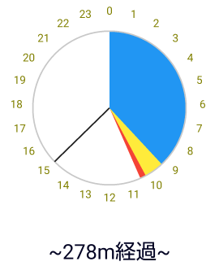
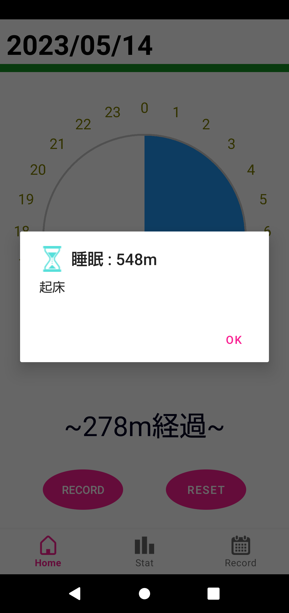
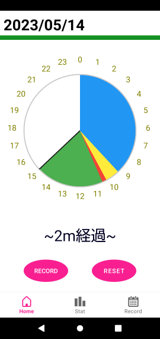
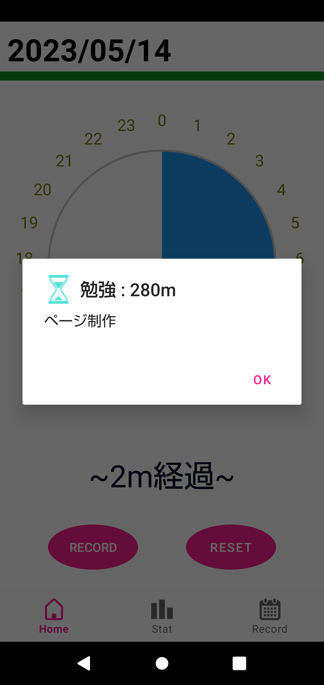

My First Post
初めに
このページは私が初めて開発したAndroidアプリについて紹介するものです。どうぞよろしくお願いいたします。

上記の画像は私が作成したAndroidアプリを起動時に表示される画面の写真です。画像下のナビゲーションシステムを見てわかるようにこのアプリの機能は"Home","Stat","Record"の 3つになっており、起動時に"Home"画面が表示されるようにしています。
Home画面
Home画面の全体像は上の画像のようになります。まずHome画面のオブジェクトが何を表しているのか説明します。
このアプリは人の一日の行動を記録することを目的として作りました。上の画像は時計を表しています。普通の時計は一周で12時間を記録しますが、画像のようにこのアプリは一周で24時間 を表現するようにしております。

円の中心から描かれている黒い直線は時計の針を表しています。上の画像の場合だと現在時刻は15時程度だと読み取ることができます。

また画像のように色の付いている部分から、黒の直線までの色のない領域は最後に記録してからの経過時間を表しています。この画像だと経過時間は赤い円弧の領域が終わる約10:30から 現在時刻の15時までであり、その間の時間は4時間30分つまり270分程度です。実際に画像下部の文字列は"~278m経過~"となっておりより正確な経過時間を描画しています。
次に色の付いた画像が何を表しているか見てみましょう。下の画像は青色の円弧をタッチしたときに表示されるメッセージです。
この画像から青い円弧の期間は"睡眠"をしていたことがわかり、その時間は"548分"だとわかります。実際に青色の円弧は0時から9時程度の範囲でその間の時間は540分であり、表示 されたメッセージの値とほぼ等しいことがわかります。このようにして色の付いた領域をタッチすると、その時間何をしていたのかを確認することができます。では画面の"Record" と書かれたボタンをタッチして新しく記録してみましょう。ボタンをタッチすると次のような画面に飛びます。

この画面では"color","title","detail"を記録することができます。"color"は先程の時計に表示される円弧の色、"title"は記録するデータのタイトル名、青色の円弧だと "睡眠"になります。"detail"はメモのようなものであり青色の円弧だと"起床"の部分になります。まず"COLOR"と書かれたボタンを押して円弧の色を選びます。ボタンを押すと 下の画像のようなダイアログが表示され色を選ぶことができます。初期値で"RED"になっていますが、今回は"GREEN"を選びます。

続いて"title"に"勉強"、"detail"に"ページ制作"と入力すると以下の画像のようになります。

この状態で画面下部の"SAVE"と書かれたボタンを押すと入力したものが記録されます。それでは"SAVE"を押してみましょう。
上の画像のように"SAVE"を押すと自動的に時計が表示されているHome画面に戻ります。記録前の画面と比べると緑色の円弧が新しく描画されていることがわかります。また 画面下部の文字列も"~2m経過~"と更新されていることがわかります。それでは先程入力したデータが正しく記録されているか見てみましょう。新しく描画された緑色の 円弧をタッチすると次のようなダイアログが表示されました。
この画像から確かに先程入力したタイトルの"勉強"、メモの"ページ制作"が表示されており、円弧の色も"GREEN"を選択したので緑色となっています。以上の事から先程入力した データが正しく記録され、反映されていることがわかります。
このようにしてHome画面では自分がその時間に何をしていたか記録することができ、日記のようなものとして使うことができます。